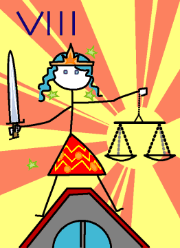

→
Damian Cugley →
Alleged Tarot 2002 →
png →
→
Damian Cugley →
Alleged Tarot 2002 →
png →
| « VII. The Chariot | VIIII. The Hermit » | |
|  | ||
Upright: justice, reason, legal matters
Reversed: injustice, bias
You may have expected trump card number VIII to be Strength, because in the Rider–Waite these two cards were transposed to make the order better suit the zodiac signs attributed to the cards by the Golden Dawn. Their reordering of the trumps is not as arbitrary as it might sound at first; the oldest known tarot decks used unnumbered cards (the order of the trumps was either self-evident or irrelevant), and it is not too much of a stretch to claim that when the numbered decks were first printed, slight errors were made. On the other hand, my virtual deck tends whimsically to be modelled on the older decks, and so I have followed the older numbering.
Justice and other abstract concepts have been depicted as women since Classical times because in Greek abstract nouns have the feminine gender.
My depiction of Justice sans blindfold is also a self-conscious archaism: the blindfold is a relatively recent addition to the traditional props of the personification of Justice. I stood her on a roof-top because I was thinking of the famous statue of Justice standing atop the Old Bailey in London. This also allows my version of justice to search out wrong-doers and take a long view unobstructed by personal bias.
See also Thirteen’s description on the Aeclectic Tarot site
If your browser supports SVG, then you should visit the SVG version of this page. It is so much more cool!